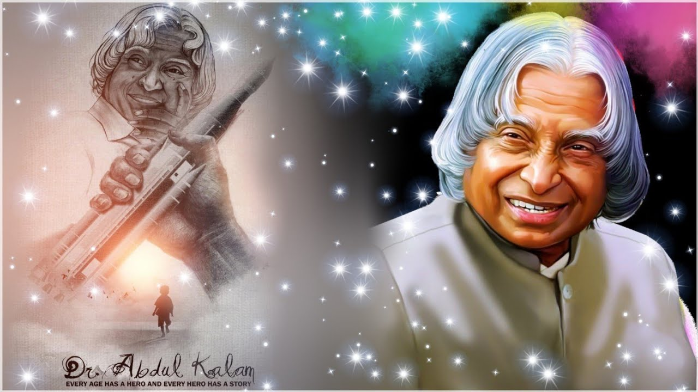

<!DOCTYPE html>
<html lang='en'></html>
<head>
 <title id='title'>Dr.APJ ABDUL KALAM</title>
 <meta charset='UTF-8'>
 <link rel='stylesheet' href='style.css'>
</head>
<body>
 <main id='main'>
   <div class='heading'>
     <h1>Dr. APJ Abdul Kalam</h1>
       <h3>The missile man of India</h3>
   
   
 <figure id="img-div">
   
  </figure>

    
      
      <div id='tribute-info'> <h2>15 Oct,1931 - 27 Jul,2015 </H2>
      <ul>
        His full name was Avul Pakir Jainulabdeen Abdul Kalam.<br/>
        A.P.J. Abdul Kalam born on Oct. 15, 1931, Rameswaram, India and died on July 27, 2015, Shillong.<br/>
        APJ Abdul Kalam was the youngest of four brothers and one sister in his family and As a young boy Kalam had to sell newspapers
        in order to support his family which was poverty-stricken and was surviving on a meager income.<br/>
        After completing his education at Schwartz Higher secondary school, Abdul Kalam went to attend St. Joseph’s College and graduated
        in Physics in 1954. He then moved to Madras in 1955 to study aerospace engineering in the Madras Institute of Technology.<br/>
        After graduating from the Madras Institute of Technology in 1960, APJ Abdul Kalam joined the Aeronautical Development 
        Establishment of the Defence Research and Development 
        Organisation (DRDO) as a scientist after becoming a member of the Defence Research and Development Service.<br/>
        APJ Abdul Kalam was also invited by Raja Ramanna to witness the country’s first nuclear test, Smiling Buddha,
         as the representative of TBRL, even though he had not participated in its development.<br/>
         In 1969, APJ Abdul Kalam was transferred to the Indian Space Research Organisation (ISRO) where he was the project
          director of India’s first Satellite Launch Vehicle which successfully deployed the Rohini satellite in near-earth orbit 
          in July 1980.
        <br/>
        He also published books with messages for our people that addressed every critical issue India faced.<br/>
        <br/>
        <li>Wings of Fire: An Autobiography</li>
         <li>Turning Points: A Journey Through Challenges</li>
        <li>Ignited Minds</li>
       
          and many more...<br/>
          <br/>
          <center>Dr. APJ Abdul Kalam said : </center>
          <center>"Don't take rest after your first victory because if you
           fail in second, more lips are waiting to say that your first victory was just luck."</center>
     </ul>
     
     <p>" India can never forget his indelible contribution towards national development, be it as a scientist and as the President of India. His life journey gives strength to millions".</p>
     
     <br/>
      <h1 id="last">Tribute to Dr. APJ Abdul Kalam</h1>
    <br/>
    
 
    </main>
</body>
</html>